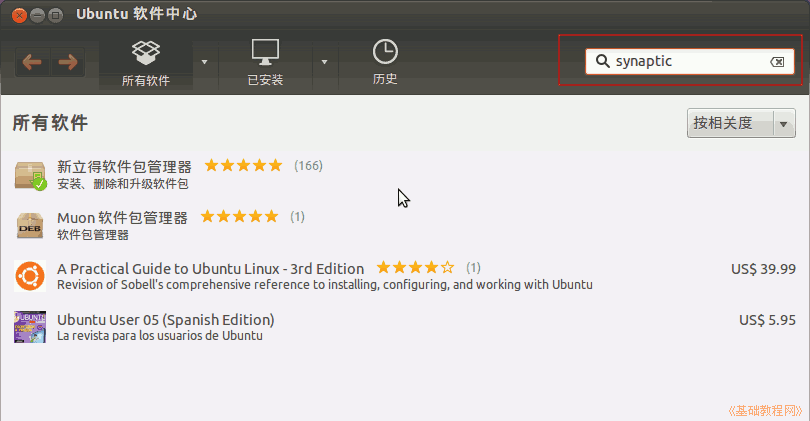
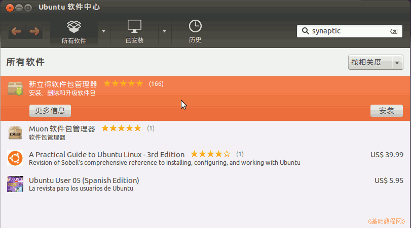
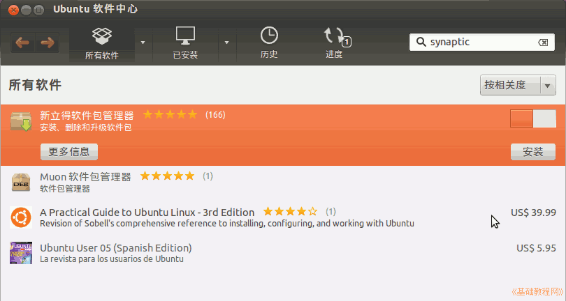
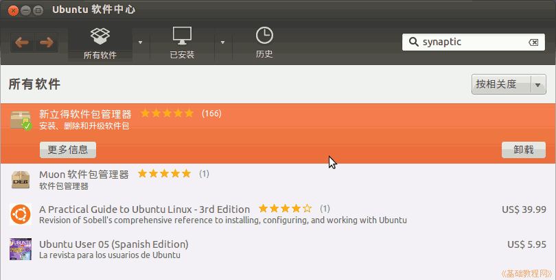

Ubuntu 入门操作指南
作者：TeliuTe 来源：基础教程网
十、Ubuntu 软件中心 返回目录 下一课软件中心是添加和删除软件程序的地方，需要验证管理员密码；
1、Ubuntu 软件中心
1）点击左侧栏一个黄色打开的文件包图标，打开 Ubuntu 软件中心；
2）在右上角的搜索框中，输入synaptic，下面的列表中出来新立得软件包管理器；

3）点击选中新立得软件包管理器，然后点击右边出来的安装按钮；

4）在出来的验证框中输入自己的密码，然后右边出来一个安装进度条；

5）安装完成后，右边的按钮变成“卸载”，点击可以卸载该软件；

6）用同样的方法可以安装或卸载其他软件包，还可以在左边的分组列表中查看；
本节学习了Ubuntu 软件中心的基础知识，如果你成功地完成了练习，请继续学习下一课内容；
本教程由86团学校TeliuTe制作|著作权所有
基础教程网：http://teliute.org/
美丽的校园……
转载和引用本站内容，请保留版权信息和本站链接。